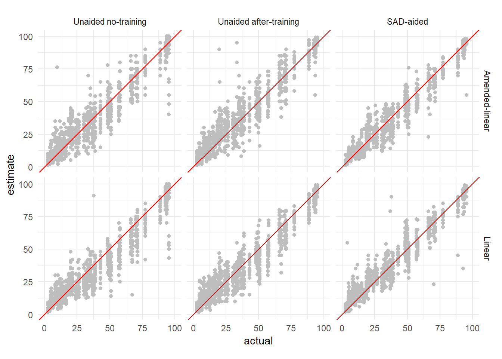
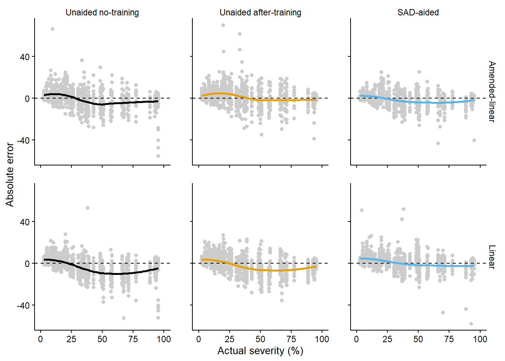
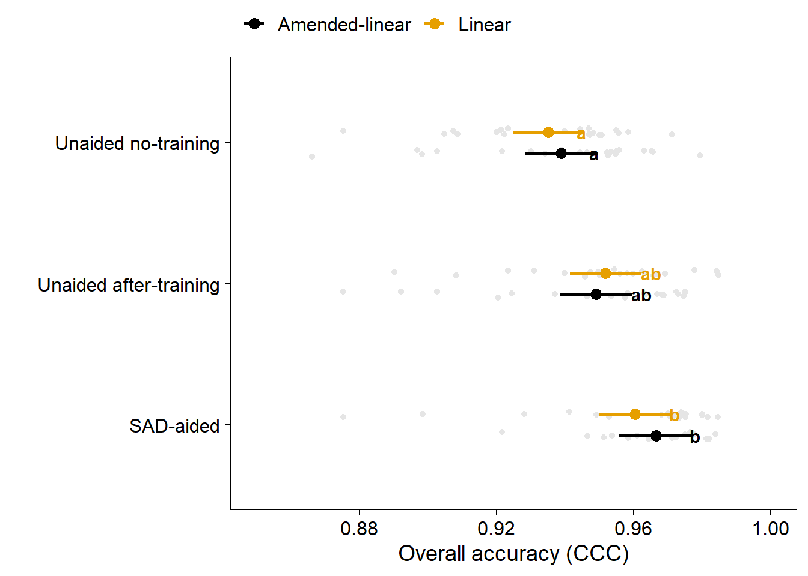
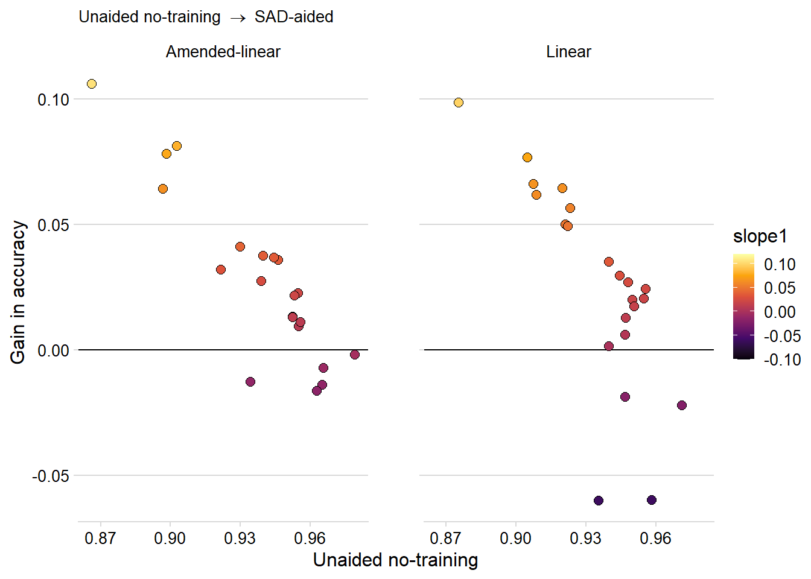
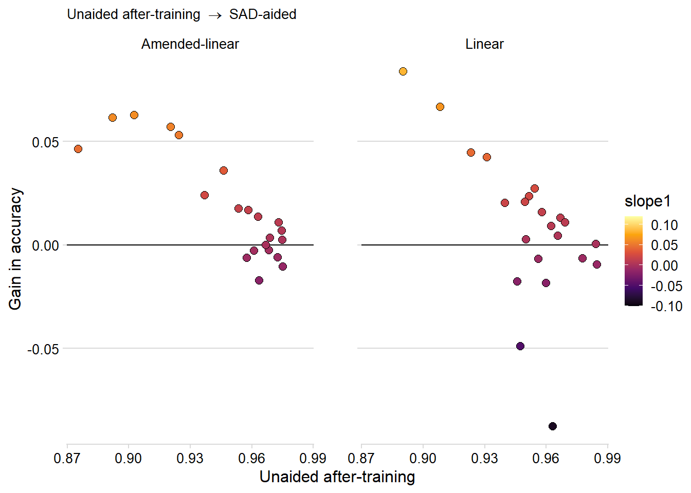
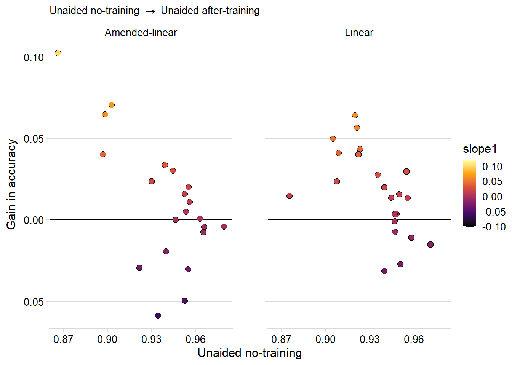
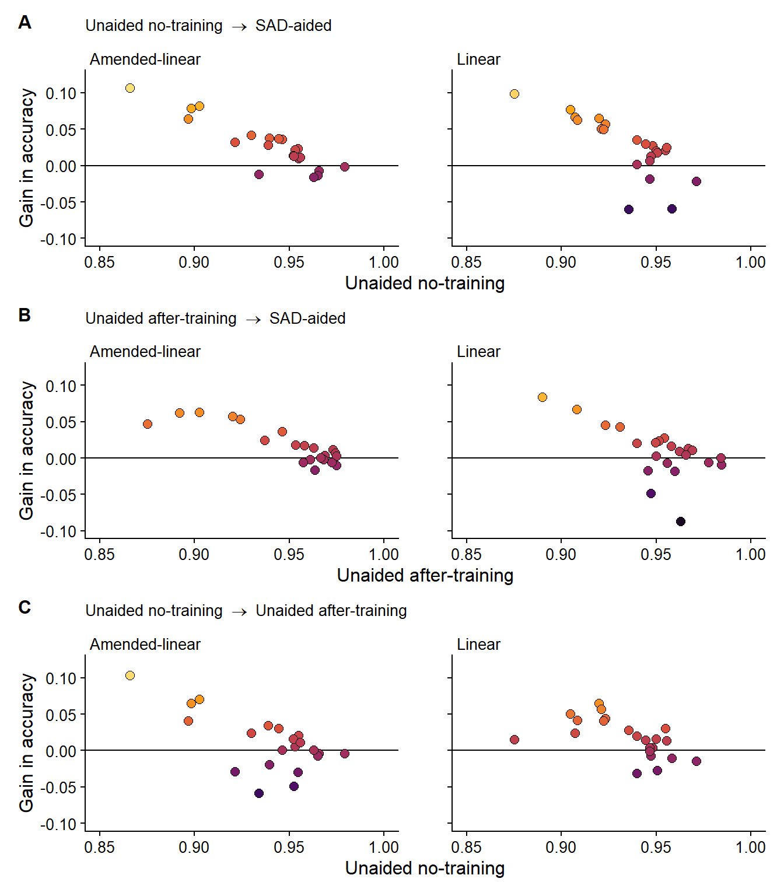

library(tidyverse)
library(DescTools)
library(ggthemes)
library(lemon)
library(cowplot)
library(lme4)
library(lmerTest)
library(emmeans)
library(multcomp)
library(patchwork)
library(epiR)
library(irr)
library(ggdist)Data analysis
Libraries
About R packages
Make sure to have all R packages installed before running the analysis described in this website.
Loading dataset
all_data = read.csv("data/wrangled_data.csv") %>%
mutate(rater = as.factor(rater))%>%
mutate(aid = factor(aid, levels = c("Unaided no-training","Unaided after-training","SAD-aided")))Exploratory analysis
Number of raters
Number of leaves
Severity distribution
Agreement
all_data %>%
ggplot(aes(actual, estimate))+
geom_point(color ="gray")+
geom_abline(intercept = 0, slope = 1, color ="red")+
# geom_smooth(color = "black", aes(group = rater), se = F)+
facet_grid(sad_structure~aid)+
coord_equal()+
xlim(0,100)+
theme_minimal()
Error of severity estimates
all_data %>%
mutate(error = estimate-actual) %>%
group_by(sad_structure, aid) %>%
summarise(mean(error),
sd(error)) %>%
as.data.frame()`summarise()` has grouped output by 'sad_structure'. You can override using the `.groups` argument.Visualizing error
all_data %>%
ggplot(aes(actual, estimate-actual, color = aid))+
geom_point(color ="gray80")+
geom_hline(yintercept = 0, color ="black", linetype = "dashed")+
geom_smooth(se = F, method = "loess")+
facet_rep_grid(sad_structure~aid)+
xlim(0,100)+
scale_color_colorblind()+
theme_half_open(font_size = 10)+
# theme_minimal_hgrid(font_size = 10)+
labs(x = "Actual severity (%)",
y = "Absolute error")+
theme(legend.position = "none",
strip.background = element_blank())`geom_smooth()` using formula 'y ~ x'
ggsave("figs/errors.png", dpi = 600, height = 4, width = 6, bg = "white")`geom_smooth()` using formula 'y ~ x'Calculating accuracy statistics
stats_data = all_data %>%
group_by(aid, rater, sad_structure) %>%
summarise(ccc = CCC(estimate, actual)$rho.c$est,
r = cor(estimate, actual),
cb = CCC(estimate, actual)$C.b,
ccc_lower = CCC(estimate, actual)$rho.c$lwr.ci,
ccc_upper = CCC(estimate, actual)$rho.c$upr.ci,
s.shift = CCC(estimate, actual)$s.shift,
l.shift = CCC(estimate, actual)$l.shift) %>%
# filter(aid == "Unaided After-Training") %>%
arrange(-ccc)`summarise()` has grouped output by 'aid', 'rater'. You can override using the `.groups` argument.as.data.frame(stats_data)# Saving the stats to use in the over time accuracy analysis
write.csv(stats_data, "data/stats_first_three_rounds.csv", row.names = F)Modeling
Overall accuracy
mix_ccc = lmer(ccc ~ aid*sad_structure + (1|rater),
data =stats_data)
summary(mix_ccc)Linear mixed model fit by REML. t-tests use Satterthwaite's method [
lmerModLmerTest]
Formula: ccc ~ aid * sad_structure + (1 | rater)
Data: stats_data
REML criterion at convergence: -543.8
Scaled residuals:
Min 1Q Median 3Q Max
-3.3994 -0.3846 0.3193 0.6108 1.5339
Random effects:
Groups Name Variance Std.Dev.
rater (Intercept) 3.056e-05 0.005528
Residual 5.769e-04 0.024019
Number of obs: 129, groups: rater, 43
Fixed effects:
Estimate Std. Error df
(Intercept) 0.938860 0.005378 122.380727
aidUnaided after-training 0.010163 0.007413 81.999999
aidSAD-aided 0.027573 0.007413 81.999999
sad_structureLinear -0.003714 0.007519 122.380727
aidUnaided after-training:sad_structureLinear 0.006500 0.010363 81.999999
aidSAD-aided:sad_structureLinear -0.002303 0.010363 81.999999
t value Pr(>|t|)
(Intercept) 174.559 < 2e-16 ***
aidUnaided after-training 1.371 0.174095
aidSAD-aided 3.720 0.000364 ***
sad_structureLinear -0.494 0.622233
aidUnaided after-training:sad_structureLinear 0.627 0.532268
aidSAD-aided:sad_structureLinear -0.222 0.824680
---
Signif. codes: 0 '***' 0.001 '**' 0.01 '*' 0.05 '.' 0.1 ' ' 1
Correlation of Fixed Effects:
(Intr) adUaf- adSAD- sd_stL aUa-:_
adUnddaftr- -0.689
aidSAD-aidd -0.689 0.500
sd_strctrLn -0.715 0.493 0.493
adUaftr-:_L 0.493 -0.715 -0.358 -0.689
adSAD-dd:_L 0.493 -0.358 -0.715 -0.689 0.500car::Anova(mix_ccc)Tukey-test
- Rounds by SAD structure ::: {.cell}
em_ccc1 = emmeans(mix_ccc, "aid", by = "sad_structure", type = "response")
cld_acc = as.data.frame( cld(em_ccc1, Letters = letters) )
cld(em_ccc1, Letters = letters):::
- SAD structure by rounds
em_ccc2 = emmeans(mix_ccc,"sad_structure" , by ="aid", type = "response" )
cld(em_ccc2, Letters = LETTERS)Plot
as.data.frame(em_ccc2) %>%
ggplot(aes(aid, emmean, color = sad_structure))+
geom_point(data = stats_data,
aes(aid, ccc, fill = sad_structure),
position = position_jitterdodge(jitter.width = 0.05, dodge.width = 0.3),
color = "gray90")+
geom_point(position = position_dodge(width = .3),
size =3)+
geom_errorbar(aes(ymin= lower.CL, ymax = upper.CL),
position = position_dodge(width = .3),
width = 0,
size =1)+
geom_text(data = cld_acc, aes(aid,emmean, label = .group),
position = position_dodge(width = 0.3),
hjust = -1.2, fontface= "bold",
show.legend = F )+
scale_color_colorblind()+
labs(x = "",
y = "Overall accuracy (CCC)",
color ="",
fill = "")+
theme_half_open()+
scale_y_continuous(breaks = seq(0.8,1,by = 0.04),
limits = c(0.85,1))+
theme(legend.position = "top",
# axis.text.x = element_text(angle = 45, hjust = 1)
)+
scale_x_discrete(limits = c("SAD-aided", "Unaided after-training", "Unaided no-training"))+
coord_flip()
ggsave("figs/overall_ccc.png", dpi = 600, height = 3.5,width =6, bg = "white")Precision
mix_r = lmer(r ~ aid*sad_structure+(1|rater),
data =stats_data)
summary(mix_r)Linear mixed model fit by REML. t-tests use Satterthwaite's method [
lmerModLmerTest]
Formula: r ~ aid * sad_structure + (1 | rater)
Data: stats_data
REML criterion at convergence: -626.9
Scaled residuals:
Min 1Q Median 3Q Max
-3.4853 -0.2616 0.2422 0.5868 1.2974
Random effects:
Groups Name Variance Std.Dev.
rater (Intercept) 4.025e-05 0.006344
Residual 2.728e-04 0.016516
Number of obs: 129, groups: rater, 43
Fixed effects:
Estimate Std. Error df
(Intercept) 9.546e-01 3.861e-03 1.191e+02
aidUnaided after-training 8.057e-03 5.097e-03 8.200e+01
aidSAD-aided 1.754e-02 5.097e-03 8.200e+01
sad_structureLinear 8.255e-04 5.398e-03 1.191e+02
aidUnaided after-training:sad_structureLinear 7.826e-03 7.126e-03 8.200e+01
aidSAD-aided:sad_structureLinear -6.493e-03 7.126e-03 8.200e+01
t value Pr(>|t|)
(Intercept) 247.243 < 2e-16 ***
aidUnaided after-training 1.581 0.117802
aidSAD-aided 3.441 0.000915 ***
sad_structureLinear 0.153 0.878714
aidUnaided after-training:sad_structureLinear 1.098 0.275290
aidSAD-aided:sad_structureLinear -0.911 0.364846
---
Signif. codes: 0 '***' 0.001 '**' 0.01 '*' 0.05 '.' 0.1 ' ' 1
Correlation of Fixed Effects:
(Intr) adUaf- adSAD- sd_stL aUa-:_
adUnddaftr- -0.660
aidSAD-aidd -0.660 0.500
sd_strctrLn -0.715 0.472 0.472
adUaftr-:_L 0.472 -0.715 -0.358 -0.660
adSAD-dd:_L 0.472 -0.358 -0.715 -0.660 0.500car::Anova(mix_r)Tukey-test
- Rounds by SAD structure
em_r1 = emmeans(mix_r, "aid", by = "sad_structure", type = "response")
cld(em_r1, Letters = letters)- SAD structure by rounds
em_r2 = emmeans(mix_r,"sad_structure" , by ="aid", type = "response" )
cld(em_r2, Letters = LETTERS)Bias Correction factor
# mix_cb = lmer(cb ~ aid*sad_structure+(1|rater),
# data =stats_data)
mix_cb = glmmTMB::glmmTMB(cb ~ aid*sad_structure+(1|rater),
family=list(family="beta",link="logit"),
data =stats_data)
summary(mix_cb) Family: beta ( logit )
Formula: cb ~ aid * sad_structure + (1 | rater)
Data: stats_data
AIC BIC logLik deviance df.resid
-849.5 -826.6 432.7 -865.5 121
Random effects:
Conditional model:
Groups Name Variance Std.Dev.
rater (Intercept) 0.009815 0.09907
Number of obs: 129, groups: rater, 43
Dispersion parameter for beta family (): 82.3
Conditional model:
Estimate Std. Error z value
(Intercept) 4.3775 0.1823 24.018
aidUnaided after-training -0.1571 0.2382 -0.659
aidSAD-aided 0.3653 0.2579 1.416
sad_structureLinear -0.4966 0.2267 -2.191
aidUnaided after-training:sad_structureLinear 0.1872 0.3147 0.595
aidSAD-aided:sad_structureLinear 0.4892 0.3445 1.420
Pr(>|z|)
(Intercept) <2e-16 ***
aidUnaided after-training 0.5097
aidSAD-aided 0.1567
sad_structureLinear 0.0285 *
aidUnaided after-training:sad_structureLinear 0.5520
aidSAD-aided:sad_structureLinear 0.1555
---
Signif. codes: 0 '***' 0.001 '**' 0.01 '*' 0.05 '.' 0.1 ' ' 1car::Anova(mix_cb)Tukey-test
- Rounds by SAD structure
em_cb1 = emmeans(mix_cb, "aid", by = "sad_structure", type = "response")
cld(em_cb1, Letters = letters)- SAD structure by rounds
em_cb2 = emmeans(mix_cb,"sad_structure" , by ="aid", type = "response" )
cld(em_cb2, Letters = LETTERS)Location shift
mix_l.shift = lmer(l.shift ~ aid*sad_structure+(1|rater),
data =stats_data)
summary(mix_l.shift)Linear mixed model fit by REML. t-tests use Satterthwaite's method [
lmerModLmerTest]
Formula: l.shift ~ aid * sad_structure + (1 | rater)
Data: stats_data
REML criterion at convergence: -146.1
Scaled residuals:
Min 1Q Median 3Q Max
-2.81614 -0.49484 -0.02702 0.67441 2.00504
Random effects:
Groups Name Variance Std.Dev.
rater (Intercept) 0.007296 0.08542
Residual 0.010579 0.10285
Number of obs: 129, groups: rater, 43
Fixed effects:
Estimate Std. Error df
(Intercept) 0.01844 0.02918 92.25837
aidUnaided after-training -0.07017 0.03174 82.00000
aidSAD-aided 0.01892 0.03174 82.00000
sad_structureLinear 0.09681 0.04079 92.25837
aidUnaided after-training:sad_structureLinear 0.01264 0.04438 82.00000
aidSAD-aided:sad_structureLinear -0.16465 0.04438 82.00000
t value Pr(>|t|)
(Intercept) 0.632 0.528874
aidUnaided after-training -2.211 0.029840 *
aidSAD-aided 0.596 0.552676
sad_structureLinear 2.374 0.019691 *
aidUnaided after-training:sad_structureLinear 0.285 0.776521
aidSAD-aided:sad_structureLinear -3.710 0.000376 ***
---
Signif. codes: 0 '***' 0.001 '**' 0.01 '*' 0.05 '.' 0.1 ' ' 1
Correlation of Fixed Effects:
(Intr) adUaf- adSAD- sd_stL aUa-:_
adUnddaftr- -0.544
aidSAD-aidd -0.544 0.500
sd_strctrLn -0.715 0.389 0.389
adUaftr-:_L 0.389 -0.715 -0.358 -0.544
adSAD-dd:_L 0.389 -0.358 -0.715 -0.544 0.500car::Anova(mix_l.shift)Tukey-test
- Rounds by SAD structure
em_l.shift1 = emmeans(mix_l.shift, "aid", by = "sad_structure", type = "response")
cld(em_l.shift1, Letters = letters)- SAD structure by rounds
em_l.shift2 = emmeans(mix_l.shift,"sad_structure" , by ="aid", type = "response" )
cld(em_l.shift2, Letters = LETTERS)Scale shift
mix_s.shift = lmer(s.shift ~ aid*sad_structure+(1|rater),
data =stats_data)
summary(mix_s.shift)Linear mixed model fit by REML. t-tests use Satterthwaite's method [
lmerModLmerTest]
Formula: s.shift ~ aid * sad_structure + (1 | rater)
Data: stats_data
REML criterion at convergence: -312.8
Scaled residuals:
Min 1Q Median 3Q Max
-2.0741 -0.5703 -0.0303 0.3972 2.5560
Random effects:
Groups Name Variance Std.Dev.
rater (Intercept) 0.001550 0.03937
Residual 0.002878 0.05364
Number of obs: 129, groups: rater, 43
Fixed effects:
Estimate Std. Error df
(Intercept) 1.063989 0.014520 98.789158
aidUnaided after-training -0.015343 0.016555 82.000000
aidSAD-aided -0.021877 0.016555 82.000000
sad_structureLinear 0.044884 0.020300 98.789158
aidUnaided after-training:sad_structureLinear -0.002368 0.023144 82.000000
aidSAD-aided:sad_structureLinear -0.024125 0.023144 82.000000
t value Pr(>|t|)
(Intercept) 73.277 <2e-16 ***
aidUnaided after-training -0.927 0.3567
aidSAD-aided -1.321 0.1900
sad_structureLinear 2.211 0.0293 *
aidUnaided after-training:sad_structureLinear -0.102 0.9188
aidSAD-aided:sad_structureLinear -1.042 0.3003
---
Signif. codes: 0 '***' 0.001 '**' 0.01 '*' 0.05 '.' 0.1 ' ' 1
Correlation of Fixed Effects:
(Intr) adUaf- adSAD- sd_stL aUa-:_
adUnddaftr- -0.570
aidSAD-aidd -0.570 0.500
sd_strctrLn -0.715 0.408 0.408
adUaftr-:_L 0.408 -0.715 -0.358 -0.570
adSAD-dd:_L 0.408 -0.358 -0.715 -0.570 0.500car::Anova(mix_s.shift)Tukey-test
- Rounds by SAD structure
em_s.shift1 = emmeans(mix_s.shift, "aid", by = "sad_structure", type = "response")
cld(em_s.shift1, Letters = letters)- SAD structure by rounds
em_s.shift2 = emmeans(mix_s.shift,"sad_structure" , by ="aid", type = "response" )
cld(em_s.shift2, Letters = LETTERS)Gain in accuracy
Unaided no-training to SAD-aided
g1_slope = stats_data %>%
dplyr::select(rater, sad_structure, ccc, aid) %>%
pivot_wider(values_from = ccc,
names_from = aid) %>%
mutate(slope1 =`SAD-aided`- `Unaided no-training`) %>%
ggplot(aes(`Unaided no-training`,slope1,fill= slope1, label = rater ))+
geom_hline(yintercept = 0)+
geom_point(size =2.5, shape = 21)+
# geom_text(size = 2)+
scale_fill_viridis_c(option ="B", limits =c(-0.1, 0.12))+
theme_minimal_hgrid(font_size = 12)+
labs(subtitle = expression("Unaided no-training "%->%" SAD-aided"),
y = "Gain in accuracy")+
facet_rep_wrap(~sad_structure, nrow =1)
g1_slope
Unaided after-training to SAD-aided
g2_slope = stats_data %>%
dplyr::select(rater, sad_structure, ccc, aid) %>%
pivot_wider(values_from = ccc,
names_from = aid) %>%
mutate(slope1 = `SAD-aided` - `Unaided after-training`) %>%
ggplot(aes(`Unaided after-training`,slope1, fill = slope1 ))+
geom_hline(yintercept = 0)+
geom_point(size =2.5, shape = 21)+
scale_fill_viridis_c(option ="B", limits =c(-0.1, 0.12))+
theme_minimal_hgrid(font_size = 12)+
labs(subtitle = expression("Unaided after-training "%->%" SAD-aided"),
y = "Gain in accuracy")+
facet_rep_wrap(~sad_structure, nrow =1)
g2_slope
Unaided no-training to Unaided after-training
g3_slope = stats_data %>%
dplyr::select(rater, sad_structure, ccc, aid) %>%
pivot_wider(values_from = ccc,
names_from = aid) %>%
mutate(slope1 =`Unaided after-training`- `Unaided no-training`) %>%
ggplot(aes(`Unaided no-training`,slope1, fill = slope1 ))+
geom_hline(yintercept = 0)+
geom_point(size =2.5, shape =21)+
scale_fill_viridis_c(option ="B", limits =c(-0.1, 0.12))+
theme_minimal_hgrid(font_size = 12)+
labs(#subtitle = "Un. after-training - Un. no-training",
subtitle = expression("Unaided no-training "%->%" Unaided after-training"),
y = "Gain in accuracy")+
facet_rep_wrap(~sad_structure, nrow =1)
g3_slope
# "Un. after-training \u2192 Un. no-training)""\u2192"Figure
g1_slope+g2_slope+g3_slope+
plot_annotation(tag_levels = "A")+
plot_layout(guides = "collect", ncol = 1)&
scale_x_continuous(limits = c(0.85, 1))&
theme_half_open(font_size = 12)&
# background_grid()&
scale_y_continuous(limits = c(-0.1, 0.12))&
theme(plot.subtitle = element_text(face = "bold"),
legend.position = "none",
strip.text = element_text(hjust = 0, size =10),
strip.background = element_blank()
)
ggsave("figs/slope.png",dpi = 600, height = 8, width = 7, bg = "white")Interrater reliability
Overall concordance coefficient
sads = unique(all_data$sad_structure)
aid_step = unique(all_data$aid)
box_occc = NULL
for(i in 1:length(sads)){
for(j in 1:length(aid_step)){
occc_df = all_data %>%
filter(sad_structure == sads[i],
aid == aid_step[j]) %>%
dplyr::select(leaf, rater, estimate) %>%
spread(rater, estimate, 2:3) %>%
epi.occc(na.rm = FALSE, pairs = TRUE)
occc_lil = data.frame(sad_structure = sads[i],
aid = aid_step[j],
occc = occc_df$occc,
precision = occc_df$oprec,
accuracy = occc_df$oaccu)
box_occc = bind_rows(box_occc, occc_lil)
}
}
box_occcIntra-class correlation coefficient
sads = unique(all_data$sad_structure)
aid_step = unique(all_data$aid)
box_icc = NULL
for(i in 1:length(sads)){
for(j in 1:length(aid_step)){
iccc_df = all_data %>%
filter(sad_structure == sads[i],
aid == aid_step[j]) %>%
dplyr::select(leaf, rater, estimate) %>%
spread(rater, estimate, 2:3) %>%
icc(model = "twoway", unit = "single", type = "agreement")
icc_lil = data.frame(sad_structure = sads[i],
aid = aid_step[j],
icc = iccc_df$value,
lower = iccc_df$lbound,
upper = iccc_df$ubound)
box_icc = bind_rows(box_icc, icc_lil)
}
}
box_icc